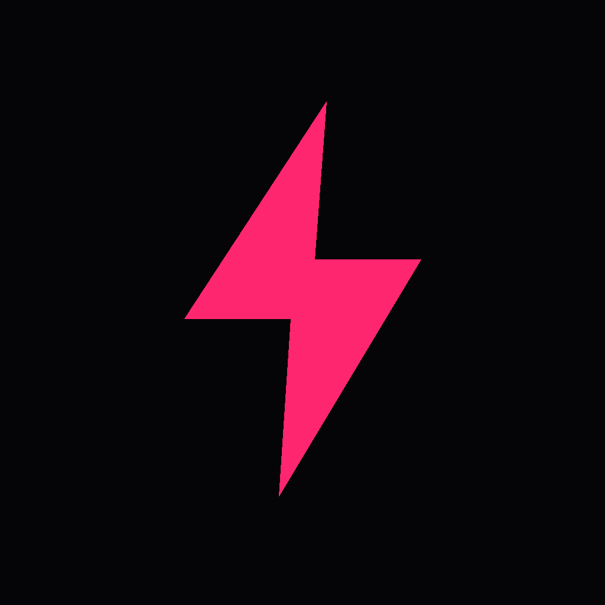
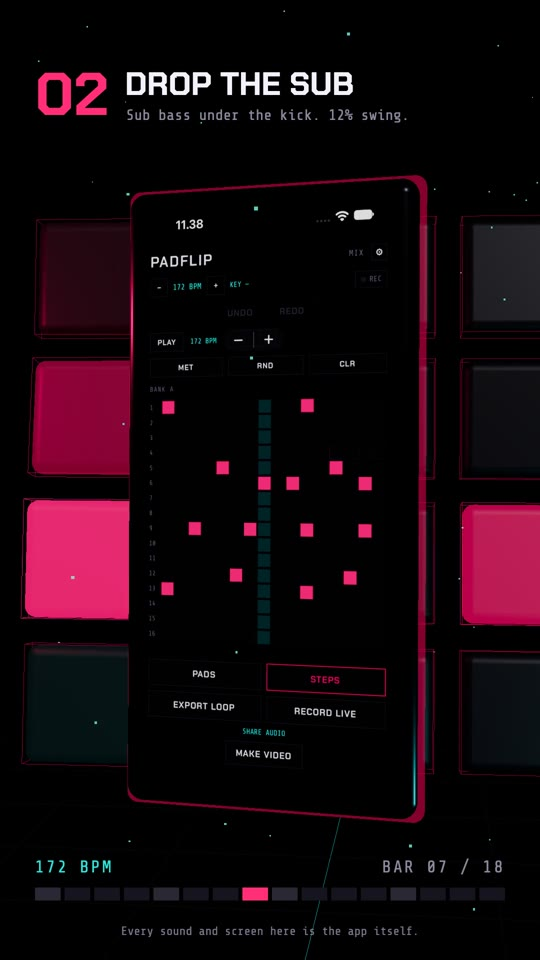

PADFLIP · PRESS KIT
PadFlip
press kit.
PadFlip is a sample-chopping beatmaker for iPhone and iPad: chop any sound into 16 pads, tap out a beat, and export a loop. It's in public beta on TestFlight. Everything here is free to use in coverage.


01FACT SHEET
PadFlip at a glance
02DESCRIPTIONS
Ready-to-use copy
Use these as they are, or cut them down.
Chop any sound into 16 pads, tap out a beat, and export a loop, on iPhone or iPad.
PadFlip is a sample-chopping beatmaker for iPhone and iPad. Record any sound and it's sliced across 16 playable pads. Chop, pitch, sequence, resample, and export a one-bar loop that drops into any DAW. It all runs on the device, with no account and no subscription.
PadFlip is a sample-chopping beatmaker for iPhone and iPad, built around one workflow: record a sound, chop it into 16 pads, tap out a beat, export it. It detects key and tempo, slices on transients or on the beat grid, and gives every pad its own pitch, stretch, trim and reverse. Four banks make 64 pads playable at once. A 16-step sequencer with swing and per-step velocity, master effects, and resampling let a loop be bounced onto a pad and built on again. Over 2,200 sounds are included, with no in-app purchases. The app has no account and no server, so nothing is uploaded.
03FEATURES
What's in version 1.0
- Record from the microphone, or import any audio file up to 60 seconds
- Automatic chopping: equal, on transients, or on the beat grid
- Key and tempo detection, with Scale Lock to keep pitched pads in key
- 4 banks × 16 pads, all 64 playable at once
- Per pad: volume, pan, pitch (±12 semitones), time-stretch (0.5×–2×), reverse, name, and a trim of its start and end
- Chop markers you drag by hand, with zoom up to 8×
- 16-step sequencer, 60–180 BPM, with swing, gate, per-step velocity, randomise and a metronome with count-in
- Master distortion, low/high-pass filter, tempo-synced delay and reverb
- Resample the whole mix onto one pad and keep building
- Export a one-bar WAV loop, a live recording, or a vertical MP4 video
- 2,235 included sounds: 24 built in plus 72 packs downloaded one at a time
- Unlimited projects, 50 steps of undo, continuous autosave and crash recovery
- Keeps playing in the background and with the screen locked
- iPad layout with an inspector beside the page, in all four orientations
- A 60-second walkthrough on first launch and one-time tips for 15 controls
- Light, dark and system appearance
04IMAGES & VIDEO
Screenshots and the promo video
iPhone screenshots at full resolution (1206 × 2622), in the app's dark appearance. The ZIP above has all four plus the icon.



Promo video · 28 seconds
A 172 BPM jungle beat made in the app in four moves: step in a break, add a sub, resample and trim a roll, then run it through the effects. Every sound and screen in it is the app. Vertical, 1080 × 1920, H.264 with sound.
Download MP4 · 8.5 MB05BACKGROUND
Design decisions
The reasons behind the choices reviewers ask about most.
Workflow
One workflow, not a studio
A general-purpose music app starts by asking what you want to make. PadFlip starts from a sound: record or pick one, and the 16 pads are ready to play.
Price
Every pack in the price
Selling sound packs separately is common in this category. In PadFlip every pack, including packs added later, is part of the one purchase.
Privacy
Nothing leaves the device
No account, no server, no analytics. Recordings leave the phone only through the share sheet.
Timing
Scheduled on the audio clock
Steps are timed against the audio clock rather than the screen, so the beat stays in time while you scroll, open panels or switch apps.
06CONTACT
Press and review requests
PadFlip is made by Marian Vrtik, a solo developer in Horsens, Denmark, under Apps by Marian. For interviews, a TestFlight invite, or a promo code once the app is on the App Store, email:
marian@appsbymarian.dkUsing the material
The icon, screenshots and video may be used in coverage of PadFlip. Please don't alter the icon.
Company
Apps by Marian · Marian Vrtik
Horsens, Denmark · CVR 46671872